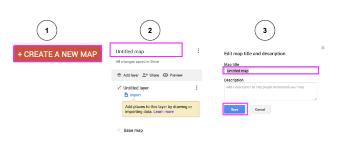

Information About Google Maps
Quick Links
What is Google My Maps?
Google My Maps is a map making app. It is used for making personalized maps. The maps can be customized with pictures, icons, and titles. The maps can be shared and built together. Google My Maps includes a measurement and direction tool. These tools are useful for finding the area and perimeter of a location.

How Do You Use Google Maps?
Google My Maps
- Go to Google My Maps.
- You will need a Google account.
- Click Get Started.
- Sign in to your account.
- Click the red Create a New Map button.
- Name the map by clicking Untitled Map.

Find Length & Width
Select each item to learn more.
Step 1: Find a place.

Step 2: Use the ruler and measure the length.

Step 3: Use the ruler to measure the width.

Step 4: Use the ruler to measure the outside of the entire building.

Explore On Your Own
Search for a place that you would like to visit one day.
- Start by finding the place on the map using the Search box.
- Add it to your map.
- Zoom in.
- Measure the length and width of the sides.
- Save your map.